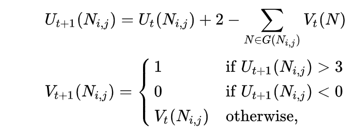

Knight's tour
A knight's tour is a sequence of moves of a knight on a chessboard
such that the knight visits every square exactly once. If the knight
ends on a square that is one knight's move from the beginning square
(so that it could tour the board again immediately, following the same
path), the tour is closed (or re-entrant); otherwise, it is open. The
knight's tour problem is the mathematical problem of finding a
knight's tour. Creating a program to find a knight's tour is a common
problem given to computer science students. Variations of the knight's
tour problem involve chessboards of different sizes than the usual 8 ×
8, as well as irregular (non-rectangular) boards.
Theory
The knight's tour problem is an instance of the more general
Hamiltonian path problem in graph theory. The problem of finding a
closed knight's tour is similarly an instance of the Hamiltonian cycle
problem. Unlike the general Hamiltonian path problem, the knight's
tour problem can be solved in linear time.
Existence
Schwenk proved that for any m × n board with m ≤ n, a closed knight's
tour is always possible unless one or more of these three conditions
are met:
- m and n are both odd
- m = 1, 2, or 4
- m = 3 and n = 4, 6, or 8.
Cull et al. and Conrad et al. proved that on any rectangular board
whose smaller dimension is at least 5, there is a (possibly open)
knight's tour.
Number of tours
On an 8 × 8 board, there are exactly 26,534,728,821,064 directed
closed tours (i.e. two tours along the same path that travel in
opposite directions are counted separately, as are rotations and
reflections). The number of undirected closed tours is half this
number, since every tour can be traced in reverse. There are 9,862
undirected closed tours on a 6 × 6 board.
Finding tours with computers
There are several ways to find a knight's tour on a given board with a
computer. Some of these methods are algorithms while others are
heuristics.
Brute-force algorithms
A brute-force search for a knight's tour is impractical on all but the
smallest boards. For example, there are approximately 4×1051 possible
move sequences on an 8 × 8 board, and it is well beyond the capacity
of modern computers (or networks of computers) to perform operations
on such a large set. However, the size of this number is not
indicative of the difficulty of the problem, which can be solved "by
using human insight and ingenuity ... without much difficulty."
Divide-and-conquer algorithms
A brute-force search for a knight's tour is impractical on all but the
smallest boards. For example, there are approximately 4×1051 possible
move sequences on an 8 × 8 board, and it is well beyond the capacity
of modern computers (or networks of computers) to perform operations
on such a large set. However, the size of this number is not
indicative of the difficulty of the problem, which can be solved "by
using human insight and ingenuity ... without much difficulty."
Warnsdorff's rule
Warnsdorff's rule is a heuristic for finding a single knight's tour.
The knight is moved so that it always proceeds to the square from
which the knight will have the fewest onward moves. When calculating
the number of onward moves for each candidate square, we do not count
moves that revisit any square already visited. It is possible to have
two or more choices for which the number of onward moves is equal;
there are various methods for breaking such ties, including one
devised by Pohl and another by Squirrel and Cull. This rule may also
more generally be applied to any graph. In graph-theoretic terms, each
move is made to the adjacent vertex with the least degree. Although
the Hamiltonian path problem is NP-hard in general, on many graphs
that occur in practice this heuristic is able to successfully locate a
solution in linear time. The knight's tour is such a special case. The
heuristic was first described in "Des Rösselsprungs einfachste und
allgemeinste Lösung" by H. C. von Warnsdorff in 1823. A computer
program that finds a knight's tour for any starting position using
Warnsdorff's rule was written by Gordon Horsington and published in
1984 in the book Century/Acorn User Book of Computer Puzzles.
Neural network solutions
The knight's tour problem also lends itself to being solved by a
neural network implementation. The network is set up such that every
legal knight's move is represented by a neuron, and each neuron is
initialized randomly to be either "active" or "inactive" (output of 1
or 0), with 1 implying that the neuron is part of the solution. Each
neuron also has a state function (described below) which is
initialized to 0. When the network is allowed to run, each neuron can
change its state and output based on the states and outputs of its
neighbors (those exactly one knight's move away) according to the
following transition rules:

where t represents discrete intervals of time,
U(Ni,j) is the state of the neuron connecting square
i to square j, V(Ni,j) is the output
of the neuron from i to j, and
G(Ni,j) is the set of neighbors of the neuron.
Although divergent cases are possible, the network should eventually
converge, which occurs when no neuron changes its state from time
t to t + 1. When the network converges, either the
network encodes a knight's tour or a series of two or more independent
circuits within the same board.